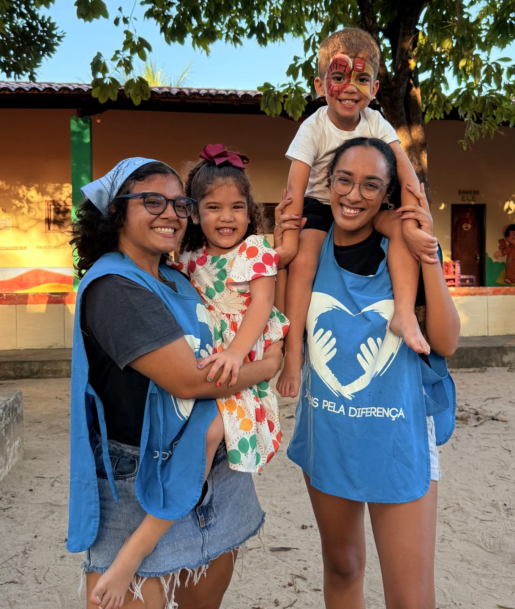
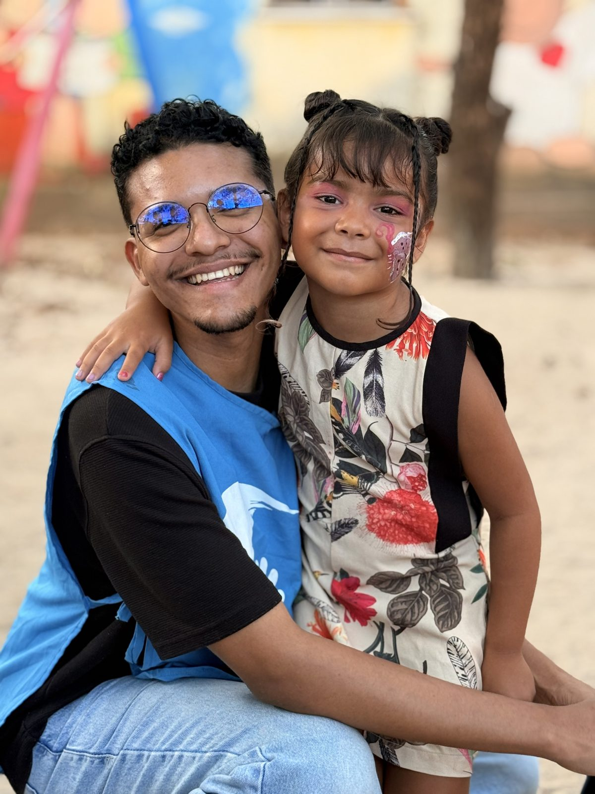
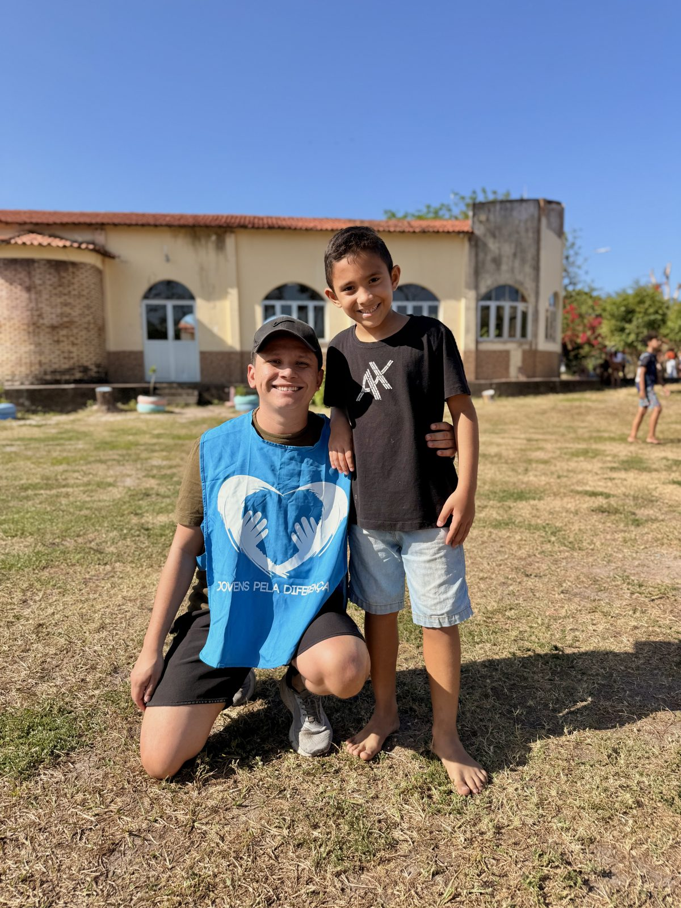

Crianças
Nossa maior prioridade. Ações de recreação, nas quais os voluntários se dividem em 4 equipes.
A Associação Civil Jovens Pela Diferença é um projeto social laico fundado em 15 de abril de 2015, em Fortaleza, no Ceará. Nasceu quando uma jovem que viveu o voluntariado no Instituto Peter Pan quis levar essa experiência transformadora a amigos e conhecidos.
Acreditamos que a juventude tem a força para fazer a diferença. Por isso formamos voluntários e investimos em um voluntariado sério, responsável e transformador.
O JPD é uma instituição laica, sem ligação ou preferência por religião. Mantemos parcerias profissionais e respeitosas com projetos que, por vezes, são ligados a religiões.

Realizamos ações todos os fins de semana, com 5 públicos diferentes.
Nossa maior prioridade. Ações de recreação, nas quais os voluntários se dividem em 4 equipes.
Ações de escuta, atividades lúdicas e presença.
Mutirões de banho e limpeza.
Jantares e cafés solidários.
Limpezas de praia e ações de conscientização.
Suporte a voluntários em situação de vulnerabilidade, com:
Frente que leva a cultura do Ceará ao alcance de todos, com vivências culturais para crianças e jovens, como a experiência na Caixa Cultural Fortaleza com o Instituto Tia Aila.
Evento anual em que equipes de voluntários competem em desafios ao longo de quatro semanas para arrecadar doações a pessoas em situação de vulnerabilidade.
Integração de novos voluntários, apadrinhamento, acompanhamento por coordenadores e oportunidades de liderança.


Para organizar as atividades, o JPD se divide em equipes e setores. Clique para conhecer cada um.
As equipes atuam nas ações, levando atividades específicas de entretenimento às crianças dos locais que visitamos. Cada voluntário escolhe sua equipe no dia da Integração, e ter uma equipe é obrigatório para fazer parte do JPD.
Os setores atuam na gestão administrativa da organização. São compostos por voluntários aprovados em processos seletivos, abertos semestralmente.
A associação conta com 3 administradores.
Presidente
Cofundadora do JPD e responsável pela estrutura organizacional desde o início.
Vice-presidente
Voluntário há 7 anos, passou pelas mais diversas frentes até chegar à Direção.
Coordenadora Geral
Voluntária há 5 anos, supervisiona as 4 equipes do JPD.
Doações de pessoas físicas são hoje a principal forma de arrecadação do Jovens Pela Diferença. Para dar continuidade às atividades, sua ajuda é essencial.
O Parceiro JPD é uma contribuição mensal, a partir de R$ 5, que ajuda a manter as atividades com qualidade e continuidade. Todos podem ser parceiros. O pagamento é feito na plataforma Apoia.se, com cartão de crédito, Pix ou boleto.
Benefícios de ser apoiador:
Quem entra no JPD passa por integração, recebe acompanhamento de um voluntário mais experiente e pode assumir responsabilidades de coordenação ao longo da trajetória.
Não há inscrições abertas no momento. As próximas abrem em breve. Acompanhe o anúncio no Instagram e no LinkedIn.
Composta por 2 fins de semana com formatos diferentes.
No sábado, uma tarde presencial para conhecer os colegas e as equipes. No domingo, uma tarde online para aprofundar o conhecimento sobre a organização.
Quatro opções de ações exclusivas para novatos viverem a primeira ação com todo o suporte.
Três meses para conhecer o JPD, com acompanhamento de um padrinho ou madrinha.
Voluntariado pleno, com autonomia e responsabilidades compatíveis com a função.
Assina o Termo de Adesão (Lei nº 9.608/98), integra oficialmente a Assembleia e representa o JPD.
Contato com realidades que talvez você ainda não conhecesse.
Um voluntário mais experiente acompanha seus 3 primeiros meses.
Reconhecimento de quem mais participou e subiu de nível.
Oportunidades diretas de desenvolvimento por meio dos setores e coordenações.
Oportunidades de liderança e orientação profissional.
Suporte a voluntários em vulnerabilidade, com cestas básicas, passagens e ajuda com o lanche.
Dados institucionais da organização.